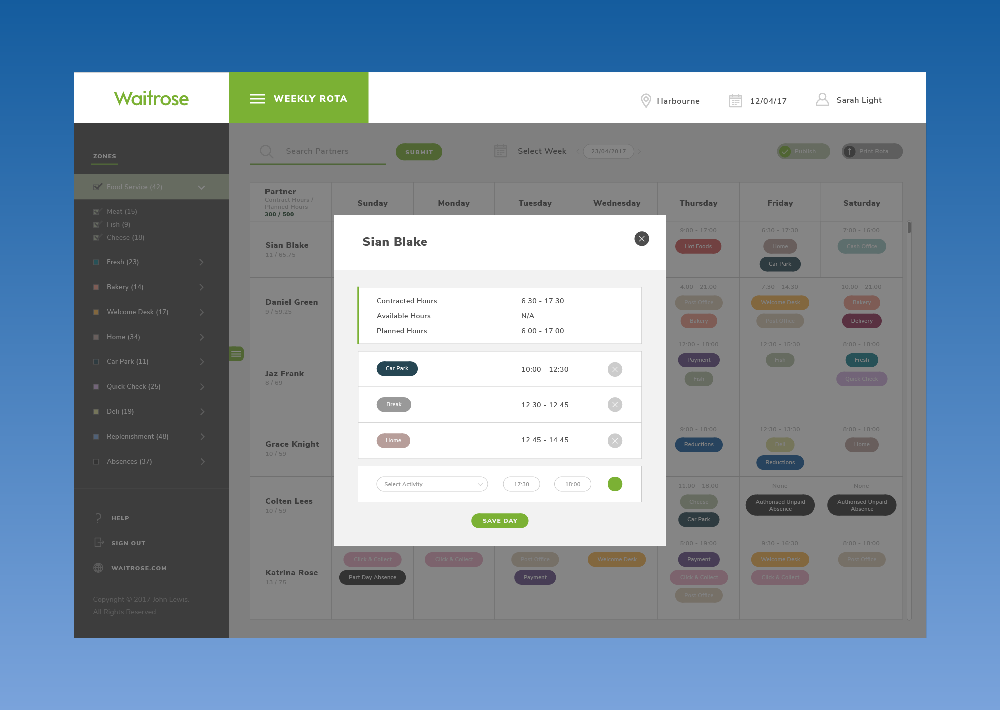
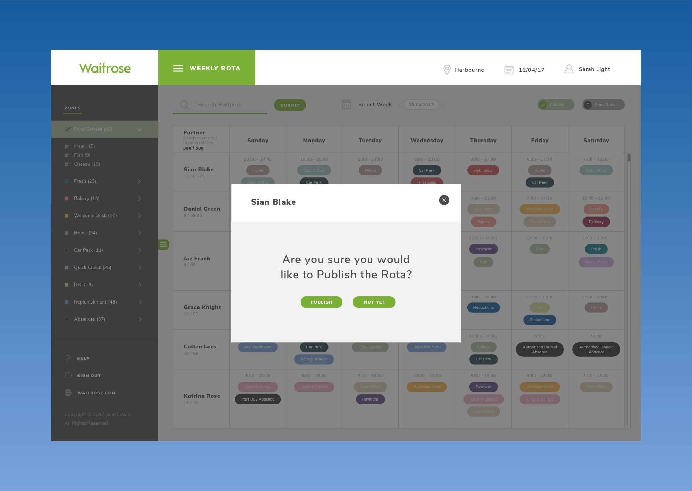
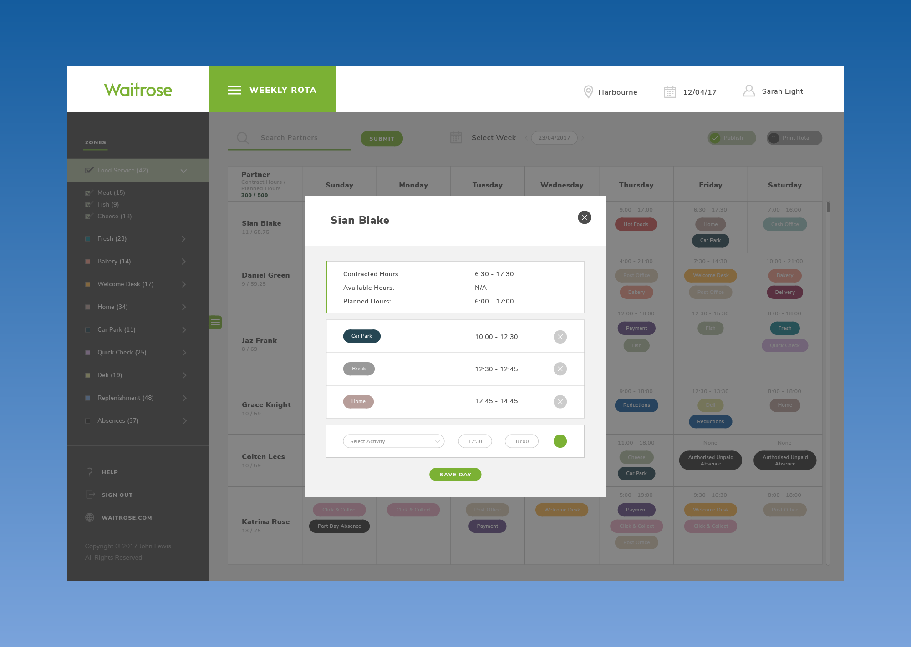
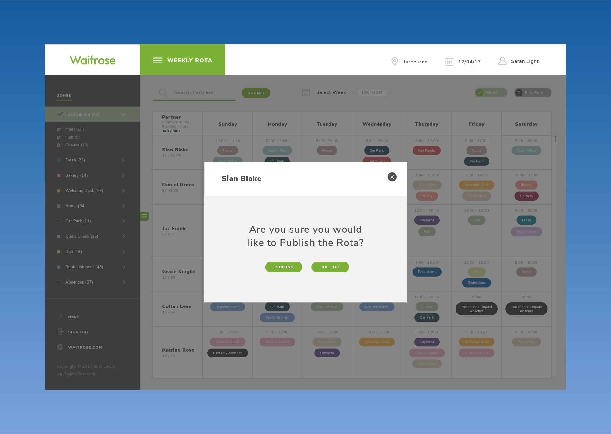

Worked with John Lewis' remote IT team based in Birmingham, to help produce a new Workforce Management system. Enabling all Waitrose commerce Partners to manage tasks, time inputs and employees effectively.
The system’s design process was initialised by sketching the basic data structure and user interface elements to be included within the system. The user interface screens were designed next, starting off by re-designing the data and element structure within the wireframe layouts. After this, the visual designs were created to envision how the overall system would look.
An example of one of the main user interface screens, as sketched by Waitrose's Operational Strategy Analyst.


The two weekly rota wireframes above display the differences in changes made from the first to last versions.
After the sketching process had been completed, I joined the team to start designing all of the interface screens. Starting off by re-designing the data and element structure within the wireframe layouts.
 



Each of the visual designs above precisely envisage the complete layout and styles for the system.
Whilst working on this project, myself and project team members revised and consolidated the core functionality. This was to make sure that all users will benefit from the functions and features vastly.
We are now currently in the process of replicating this system for John Lewis’ workforce. Enabling management and employees to use the system across various branches nationwide.